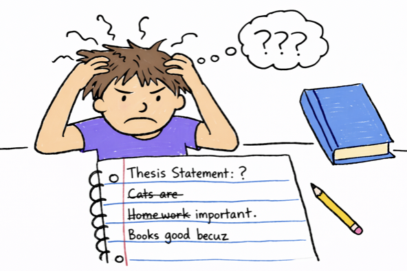
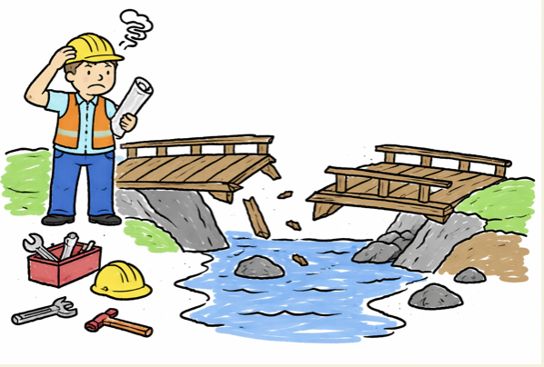
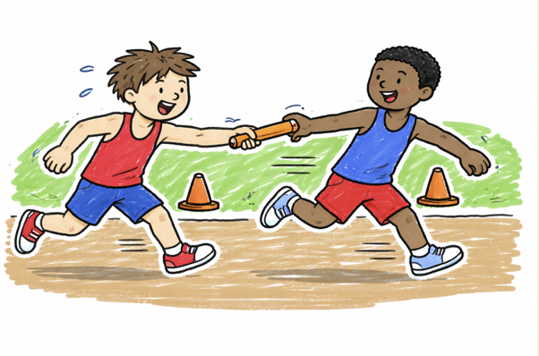
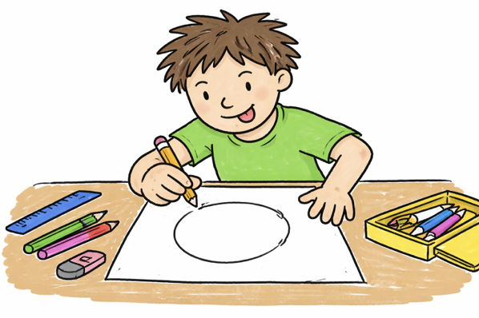

Explanation of expository essay writing
An expository essay is all about explaining, informing, or educating your reader on a specific topic. It’s not about winning an argument; it’s about making a complex idea crystal clear.
To do that effectively, you need to master four core elements. Here is a breakdown of what they are, how to use them, and a cohesive sample paragraph that ties them all together.
scroll and click on the images to see more ➔


